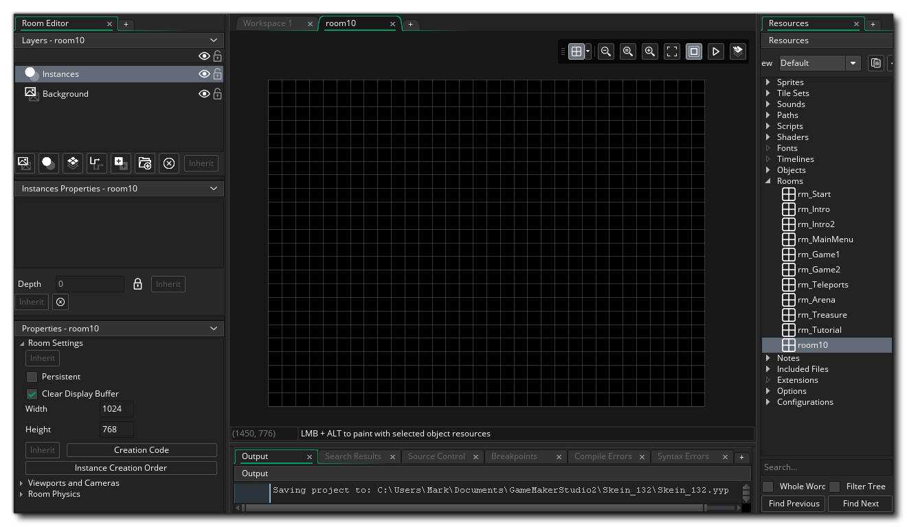

所有在 GameMaker Studio 2 中制作的游戏至少拥有一个房间（但可以有更多），而房间只是一个空间，你可以在其中放置构成游戏的物体的实例以及图块和任何其他图形资源。 当你第一次在你的资源树中创建一个房间时，你将会看到一个新的窗口，用来编辑它的属性，如下所示： 
默认情况下，房间工具将被放置在左侧，主要有三个部分：
- 层编辑器: 房间中的所有东西都放在 层上，而且有不同的层类型可以选择（稍后会详细介绍）。层按 深度 排序，这个深度定义了游戏运行时层内容被渲染到屏幕上的顺序。深度是从最高到最低排序的。所以越接近“相机”，深度越低。越远离相机，深度越高。例如，深度为 -300 的层将在深度为 -100 的层上呈现，深度为 1000 的层将呈现在深度小于此的所有层下。
- 层属性: 你添加到房间的每个层都具有自己的属性，并且这些属性将根据层类型而改变。此窗口允许你更改这些属性并编辑层的渲染方式。
- 房间属性: 房间也有一些属性，可以在这里设置。房间也有一些属性，可以在这里设置，像房间大小，活动的摄像头视口和其他等等。
我们之前提到了不同的层类型，现在让我们来看看它们是什么以及在构建游戏时如何使用它们：

|
背景层 | 背景层是可以用 单一 颜色或 单个 图像填充的层。它可以在房间内移动和定位，并且一个房间可以有多个背景层。一般来说，如名字所示，此层被用来为房间里的其他层产生一个不变的背景。默认情况下，新的房间将始终包含背景层，但是如果你不需要，可以将其删除。 |

|
实例层 | 实例层是用来放置游戏所需物体的所有实例的层。要将实例添加到层，只需单击 |

|
图块映射层 | 在创建了一个图块集之后，你需要将图块添加到你的房间，此行为是通过创建一个图块映射层来完成的。 图块映射层是一个允许你从任何已创建的图块集资源添加图块的层，并将自动设置为使用图块集单元格大小的网格。 你只能为每个网格单元添加一个图块，因此如果你需要使多个图块占据相同的空间，则应该使用多个图块映射层。 |

|
路径层 | 路径层是唯一一个在运行游戏时不会实际渲染的层。该层更像是一个“便利”层，可以帮助你创建或编辑路径资源，因为它允许你在实际房间空间内添加或编辑路径。 |

|
资源层 | 有时你需要绘制一个特别好的图形效果，但不希望使用实例以便节省性能资源或者不需要它做出了绘制自己之外的其他任何事情。 虽然 可以 使用图块，但是由于图块限制必须使用网格而每个网格单元只能有一个图像，所以图块映射层会产生限制。这时你需要使用资源层。资源层只需要精灵资源，并使用你在将其添加到房间时设置的参数来进行绘制。你可以将精灵资源添加到该层，就像将物体实例添加到实例层一样，即：单击 |